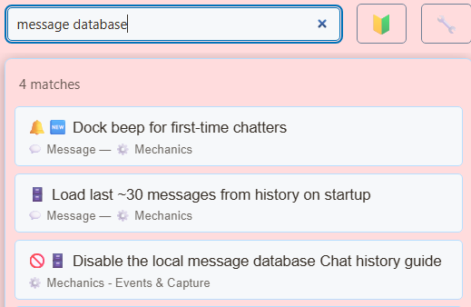

What the local message database does
SSN saves captured messages in a database on the browser or desktop installation doing the capture. The chat history page uses that database to look up earlier messages.


The Disable the local message database setting stops new messages from being stored. Live capture and dock display can continue, so seeing messages in the dock does not confirm that history is being saved.
First-time chatter detection and related history-based viewer recognition also depend on the local database.
Keep loyalty points working
Points earning and the !points, !leaderboard ja !rewards command handlers run when captured messages are stored. Disabling the local message database stops those handlers, even when the points switches are enabled.
- Find Disable the local message database in SSN settings and leave it off.
- sisse Points System, enable loyalty points and the chat commands you want to use.
- Have a viewer send a message and then
!points. Check their account for the correct platform.
Balances are stored separately from message history. Use Points System → Backup & Restore → Export Points to back them up. Sharing a session ID with another installation does not synchronize either database.
Vt loyalty points guide for earning, rankings, rewards and backups.
How existing history is used
When the points ledger is empty and has not already been initialized or reset, SSN can calculate initial points from saved chat history. This runs once to initialize balances.
Historical engagements use the live earning rules: the first qualifying engagement earns base points, and later qualifying engagements can receive streak bonuses. Only available message history can be considered; keep a points export when moving or recovering an installation.